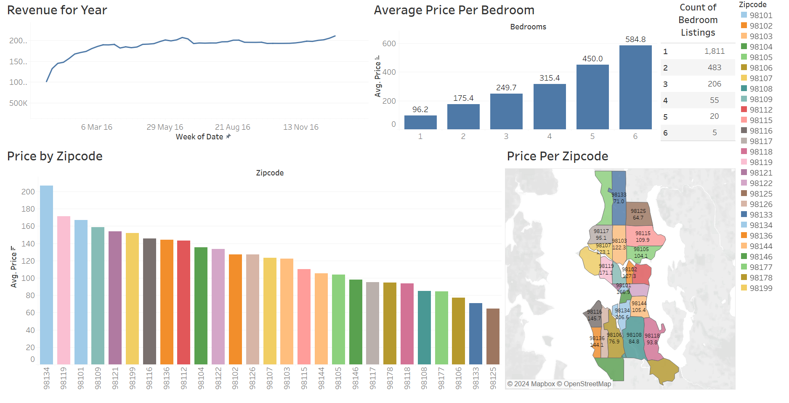

The Google Play Store Analysis Dashboard is a Power BI project that analyzes the Google Play Store Apps dataset to uncover insights into app performance, user sentiment, and category popularity. Using SQL for data analysis and Power Query Editor for data cleaning and transformation, the dashboard visualizes key metrics such as app ratings, reviews, sentiment polarity, and installs. Interactive visuals include cards for unique categories and apps, a slicer for filtering app types (Free/Paid), donut charts for sentiment distribution, and clustered column and bar charts for app counts, reviews, and installs by category. The dashboard also features line charts for sentiment trends and app performance, offering actionable insights to app developers and stakeholders.

This project analyzes Airbnb property data to uncover pricing trends, revenue performance, and listing dynamics. Using ETL processes for data cleaning and transformation, the dataset was visualized in Tableau through interactive dashboards. Key insights include average price per bedroom, distinct bedroom listings by room type, yearly revenue trends, and pricing distribution by zip code, highlighted through bar charts, line charts and color-coded maps. These visuals provide actionable insights for property hosts and stakeholders to optimize pricing strategies and understand regional market trends. This project demonstrates expertise in data preprocessing, Tableau visualization and analytical storytelling.

This project showcases a comprehensive employee performance analysis using Google BigQuery and Looker Studio. It involves cleaning and transforming a Kaggle dataset in BigQuery, followed by creating an interactive dashboard in Looker Studio to visualize key HR insights. The project highlights essential BI skills such as data preprocessing, KPI definition, and dashboard development, with ChatGPT utilized to streamline certain tasks.
The Data Professional Survey Dashboard Project involves cleaning and transforming survey data from 630 data professionals in Power Query Editor to prepare it for analysis. A well-structured data model was created, and DAX calculations were used to derive key metrics. The dashboard features interactive visuals, including treemaps, stacked bar charts, gauges, and donut charts, with filters for country, job title, and Difficulty level, enabling dynamic data exploration. This project highlights my expertise in data transformation, DAX, and interactive dashboard design, delivering actionable insights to support data-driven decision-making.
This project demonstrates core BI skills through the development of a Bike Sales Dashboard in Excel, encompassing data cleaning, transformation, and visualization. The dashboard features dynamic charts illustrating key metrics such as average customer income, age brackets, commute preferences, and percentage of customers owning cars. Interactive filters for marital status, region, and education enable users to drill down and explore specific customer segments, providing actionable insights into sales performance and customer demographics. This project highlights expertise in data preprocessing, analytical storytelling, and the creation of interactive dashboards using Excel.

This project highlights key BI skills through the development of an Orders Report dashboard using Google Looker Studio and a dataset extracted from Excel. The dashboard provides a comprehensive visualization of order data through dynamic charts, segmented by region, category, segment, and city. It also displays order quantity by Order ID and Customer ID, enabling detailed analysis. Users can interact with the dashboard using filters for category, segment, and ship mode, as well as a region-based dropdown for focused insights. This project demonstrates expertise in data visualization, interactive dashboard creation, and effective data-driven storytelling.